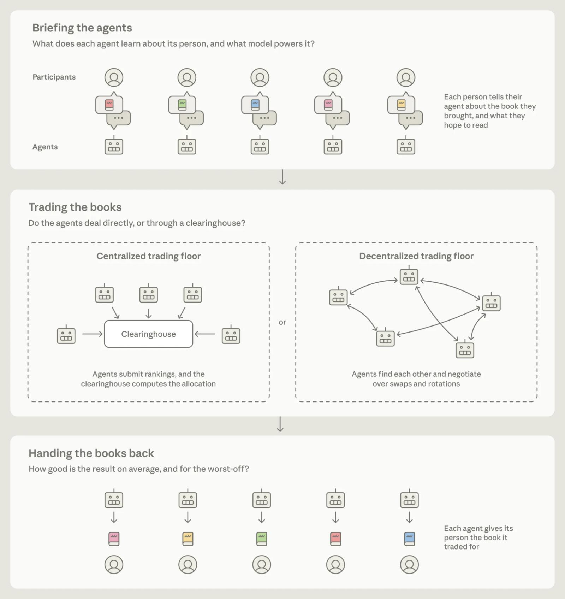
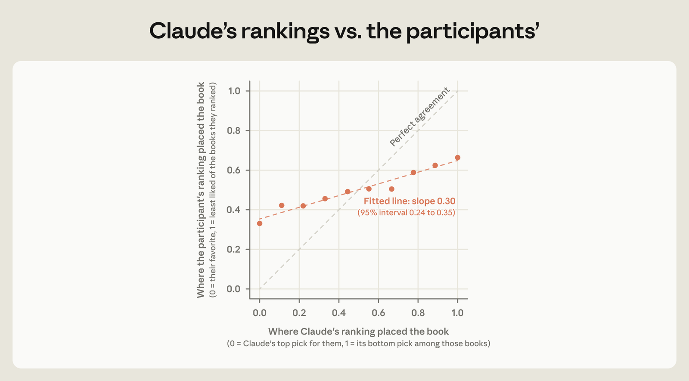
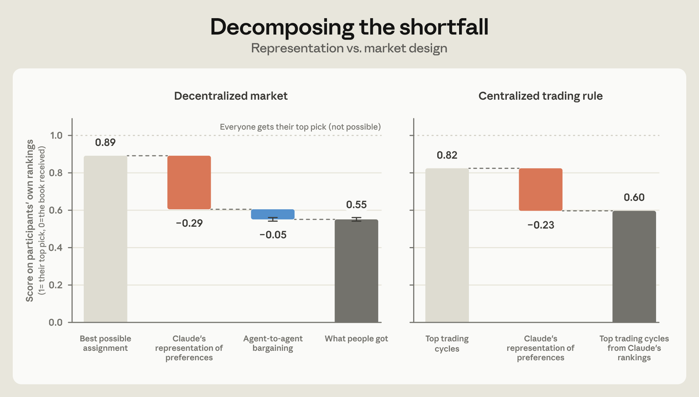
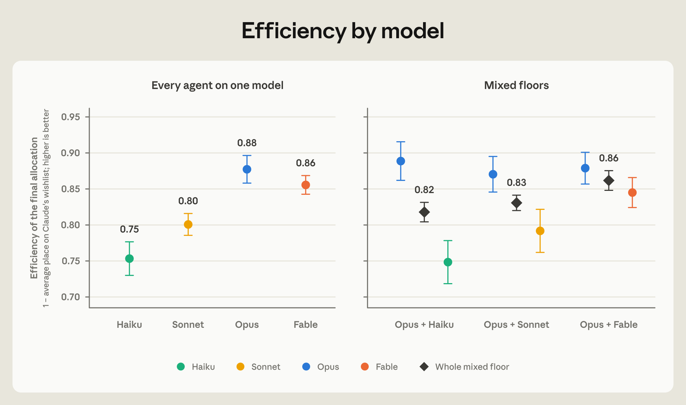

Summary
- To see what works and what breaks when agents are sent into a market, we made a miniature market of Claudes—a more controlled sequel to Project Deal, our first experiment with agents interacting in a marketplace on people's behalf. Anthropic employees across six offices brought in a book they wanted to give away. Each participant had a short chat with Claude about what they like to read, and sent a Claude-powered agent onto an open trading floor to pitch, haggle, and strike deals with other people’s agents. The goal was for everyone to take home a summer read they would enjoy.
- Participants also ranked 10 books based on their interests so we could score how well their agent represented them. From a five-minute chat, an agent’s ranking of the books matched its person's on 61% of pairs, which is surprisingly good for such a short conversation.
- Once on the trading floor, the agents traded well. The market fell short mostly because of the information agents lacked about their participants, rather than because of how they traded.
- We then re-ran every trading floor dozens of times, changing the models used and the agents’ instructions. We found that the model an agent ran on made more of a difference to its negotiating outcomes than the instructions we gave it. Markets with stronger models were more efficient.
- Most people who read their book liked it, and the average participant said they would hand Claude about a third of their yearly book budget to spend.
Why we did this
Life is full of deals and trades that would leave everyone better off, yet never happen. This is often simply because it takes too much work to find the right counterparty and negotiate until a deal is struck. Think of the patient who skips a treatment after one quote they can’t afford, when there’s a different clinic that charges far less, or the hospital that quoted them would have cut its bill if asked. Or think about your job. Somewhere there might be one that would suit you better, with an employer who would be glad to hire you. But you may not find each other, because neither of you has the time to be searching constantly. There are smaller, everyday deals that go overlooked too—shift-swapping in a workplace, coordinating carpools, or trading school pick-ups.
Could these deals happen in the future if you had an agent working for you around the clock, talking to potential counterparties and working out possible terms?
Maybe—but this future depends on a lot of questions we don’t have answers to yet. If an agent is going to act for you, how do you know it has understood you? Plus, when many agents meet to talk to each other, some marketplace or platform has to write the rules of engagement. Who is allowed in? What happens when a deal falls through?
As agents are increasingly sent into real markets, these questions take on greater urgency. So this summer, we built a small, controlled market to study these questions: a barter economy with 201 Anthropic employees and their Claude-powered agents. Everyone brought in a book they wanted to give away. Then, they chatted with their Claude-powered agent about the kind of book they hoped to read this summer. The agents met on a digital “trading floor” and swapped books until time ran out. Everyone took home a book that their agent acquired for them (or, most people did… more on that later).
The experiment gave us an early look at problems ahead. Anyone designing agents for markets will need a way to check that agents understand their participants. Anyone designing markets for agents will need clear rules about which agents are allowed in, what happens when a deal falls through, and how much market activity is visible to participants.
How to make a market
There are two basic ways to run a market. In a centralized market, everyone tells a single party what they want, and that party works out the trades. In a decentralized one, people find each other and negotiate directly. AI agents could help in both types.
Take the centralized market. If a single entity knows exactly what everyone wants, working out the best trades is just a matter of computation. Economists have long understood this. One problem, in practice, is that spelling out exactly what you want is often too tedious to be worth the effort. A café manager, for example, could build the ideal schedule for their 20 employees if each person tabulated exactly what every single shift is worth to them in terms of every other—whether they’d take two Saturday mornings over one Friday close, whether a late close is fine as long as they’re not opening the next morning, and so on. If AI agents could learn what a person wants from a breezy conversation, markets that were too costly to run centrally could become practical.1
But a central market also needs someone to run it—a “clearinghouse,” in economics parlance. And participants need to trust this entity with their information, and to enforce the chosen outcomes. Often, no such entity exists, or people would rather not tell it everything. A job seeker may not want a central matchmaker to know that they’re looking—or what they’re looking for. They’d rather approach a few employers discreetly, telling each only what it needs to know. In such cases, the market needs to be decentralized.
Here, AI agents could enable new decentralized marketplaces by reducing the effort it takes to find counterparties and negotiate. We already know this kind of help is valuable, because people pay for it. There are human agents for hire who do exactly this: real estate agents, headhunters, even matchmakers. But because search and negotiation take up hours of a person’s scarce attention, they are expensive, employed only by those who can afford them. In contrast, an AI agent’s attention is far less scarce. If it bargains well too, more people could have what homesellers and executives have—an agent working tirelessly on their behalf.

How the experiment worked
The 201 participants were spread across six local pools in the San Francisco, New York City, London, Seattle, DC, and Dublin offices. These pools ranged from three participants (Dublin) to 115 participants (San Francisco). With apologies to James Joyce, we exclude Dubliners from most of the analysis.2
This is our second look at Claude-powered markets. In Project Deal, agents bought and sold real goods for Anthropic employees in a week-long classified marketplace. But with idiosyncratic goods (like ping-pong balls and snowboards) and free-form haggling, there was no simple way to say how good the outcomes could have been. So this time we built a market that is much simpler to study and to score. In this market, participants’ preferences were neatly represented as a ranking of all the books in their pool. We could then easily compute how well the market did at satisfying these preferences.
But these clean measurements all hinge on knowing how people rank all the books in the pool. In practice, no one will rank 115 books by hand. So to learn people’s preferences, Claude conducted a short, semi-structured intake conversation with each participant, with a few open-ended questions about their general tastes and the kind of book they wanted to read this summer. From that conversation, Claude constructed a ranking over every book in the participant’s pool, estimating the participant’s preferences. For this step, we used a strong model, Fable 5.3
Separately, we collected a ground truth: each participant ranked 10 books from their pool.4 The agents never saw these ground-truth rankings.
Agents were sent onto the trading floor with their participant’s Claude-constructed ranking over all books. Every agent started out with its participant’s book, with the goal of trading it for something else.5 Each trading floor had a maximum wall-clock time, and, to prevent congestion, a limited number of agents could talk at once.6 When agents were allowed to talk, they could post one message to a shared channel proposing a swap, accepting or rejecting one, or simply chatting to the floor. Deal proposals could be bilateral swaps or multi-party rotations, and a deal was executed only if every party accepted. The entire history of the floor (who said what and which swaps were executed) was public. The floor closed either when the clock ran out or when the agents went quiet.
Half of the agents on each trading floor were randomly assigned to be “ruthless” and instructed that their only goal was to get their person a book they’d like to read over their summer break. The other half were instructed to be “prosocial”—they had the same main goal as the ruthless agents, but also a secondary goal of making sure everyone in the experiment ended up with a book they’d like.7 Exact prompts are in the Appendix.
Finally, three weeks after the books were handed out, participants took an endline survey asking how satisfied they were with what they received and how much they would trust an agent with similar decisions again. Figure 1 illustrates the overall experimental design. Figure 2 shows an excerpt from the London live floor, featuring messages from the first 5 minutes of trading.
Figure 2: An excerpt from one run. Messages on the live London floor from the first five minutes of trading. Participant names have been changed for anonymity.
A live event gives us only one run of how things could have gone. To study which outcomes were artifacts of chance rather than stable features of the setup, we reran the market many more times, changing just one variable at a time.
There were three kinds of reruns. First, we repeated the live setup exactly (every agent on Opus 4.8, half told to be “ruthless” and half “prosocial”), changing only which agents drew which instruction. We then did the same with every agent on Fable 5. Second, to isolate the effects of the model, we gave every agent neutral instructions and ran 80 floors in which all of the agents ran on Haiku 4.5, Sonnet 4.5, Opus 4.8, or Fable 5.8 Third, we ran 60 mixed floors with half the agents on Opus and half on one of the other three models. The Appendix lists all of the variations we ran.
We focus mostly on this decentralized market in this post, but we compare to two centralized alternatives as benchmarks throughout: the best possible assignment (what economists call the “utilitarian optimum”) which assumes the clearinghouse can simply ask people what they want and get honest answers, and a rule commonly studied in markets like this one, Top Trading Cycles, which does not rely on honesty (it is designed so that telling the truth is in everyone’s best interest).9
How well Claude guesses preferences
Everything an agent does for you depends on its understanding of what you want. Usually, it is hard to check how good that understanding is. Here, it was easier—each participant ranked 10 books from their pool themselves, and we can compare their ranking to Claude’s.
Claude’s rankings, based on the short intake chat, were relatively well correlated with participants’ own. Across all pairs of books a person ranked, Claude’s ordering agreed with theirs 61% of the time (where random guessing would achieve 50%). Figure 3 displays Claude’s ranking versus participants’ rankings.

To put the 61% in perspective, we compared Claude’s guesses against some other ways of guessing preferences. Ranking books simply by how popular they are, using Open Library’s want-to-read counts, agreed with participants on about 53% of the book pairs. Another simple method to compare to is collaborative filtering—constructing a ranking from public datasets of the shape “if a person liked X, they also liked Y.” We took the books a person listed on their intake, looked up which other books tended to be rated by the same readers, and ranked the person’s pool by how strongly each book co-occurred with their listed favorites. That got to about 55% pairwise agreement.
Although there is a wide literature on LLMs eliciting and representing human preferences,10 there are few numbers directly comparable to our 61% pairwise agreement. One useful reference point comes from a study in which both an algorithm and a person’s own friends predict which of two jokes the person will find funnier. The setting is pretty different, but their algorithm also agrees with people’s own judgments about 61% of the time. The friends’ predictions were right less often, about 57% of the time.
Participants who put more effort into their intake surveys were better represented. That is roughly to be expected. What is somewhat surprising is that there were perceptible differences even with a fairly short intake—the median participant typed just 216 words across eight chat messages. Writing about 300 words instead of 150 predicts about 4 percentage points more agreement—a third of the gap between guessing at random and how well Claude does for the average participant.11
The information powering the market limited outcomes
Before you send an agent into a market to deal on your behalf, you’d want to know where it is most likely to let you down. Is it more likely to fail in understanding you, or in negotiating for you? Here, we find that our colleagues’ Claudes negotiated well; where they fell short was in understanding what their people wanted.
To measure this, we look at where the book each participant ended up with sat in their own “ground-truth” ranking (not the ranking Claude constructed and traded on). If a participant scores 1, it means they got their top-listed book; if a participant scores 0, they got their last listed book; a book listed 9th out of 10 total yields 0.11, and so on. The average across all participants is the “efficiency” score of the market.12
If everyone got their top-ranked book, the market’s efficiency would be 1. But that is rarely feasible in practice, because multiple people may be after the same book—for example, in participants’ own rankings, Project Hail Mary was ranked as the number-one book by nine people in San Francisco. Taking this into account, the best possible assignment (the utilitarian optimum) in our experiment is a score of 0.89 overall, leaving participants at roughly their second choice on a 10-book list.
On average, people in our marketplace ended up at 0.55 on their own rankings, roughly their 5th ranked book on a 10-book list. What accounts for the shortfall from the optimum of 0.89? To separate the two causes, we look at the best assignment computed from Claude’s rankings, but scored on people’s own “ground-truth” rankings—it achieves 0.60. So, working from Claude’s imprecise rankings accounts for a majority (85%) of the shortfall, and sending agents into a “free-for-all” trading floor accounts for the remaining 15%.13 Once the market is run on noisy rankings, market design makes little difference to the outcome—Top Trading Cycles, computed from Claude’s rankings but scored on people’s own, achieves 0.60, compared to the decentralized market’s 0.55 (compare the grey bars on the left and right of Figure 4).

On Claude’s own rankings, model choice makes a difference
Judged by people’s own rankings, the differences in outcomes across different agent and market design choices are small.15 But it’s still valuable to look at how agent design choices affect outcomes according to Claude’s rankings, as this helps to isolate the role of market dynamics.
We first look at whether the choice of model made a difference to the efficiency of the market, where efficiency is now calculated on Claude’s rankings. In this section, we consider the reruns where agent instructions were neutral (i.e., neither prosocial nor ruthless) and we changed only the model powering an agent. We find that stronger models lead to more efficient outcomes, though not monotonically.16 On Claude’s rankings, agents on Haiku trading floors averaged 0.75, while on Opus floors they averaged 0.88 (the utilitarian optimum on Claude’s rankings is 0.95). Sonnet was between Haiku and Opus. Fable was close to, but lower than, Opus.17 See Figure 5.

On floors with a mix of models, the stronger model often did better on average than its weaker counterpart, a finding that echoes the results of Project Deal and other studies. In real markets, agents that run on different models from different companies will likely meet on a single trading floor. On floors where half of the agents ran on Opus and half ran on Haiku, the whole floor landed about halfway between an all-Opus and an all-Haiku floor, and each half did about as well as it did in a floor of its own kind. The Opus agents always came out ahead.
Ruthless agents did a bit better, while prosocial agents sometimes made sacrifices
An agent has to be loyal to the person it works for. But what exactly does loyalty require? Do agents have to be mercilessly loyal, pursuing their person’s ends at the expense of others’? In markets of AI agents, how hard each agent pushes will likely depend on how its model was trained and how it was instructed to act. So we wanted to understand the effect instructions have on who gets what.
We find that agents instructed to be “ruthless” came out slightly ahead of prosocial agents on the same floor. On Claude’s ranking, an agent told to be ruthless scored about 0.02 higher than one told to be prosocial.19 Next to the model comparisons, these differences are small. Upgrading an agent from Haiku to Opus moved people 0.12 up their lists, and an upgrade from Sonnet to Opus moved them up by 0.08.20
Sometimes the prosocial agents made knowing sacrifices. Prosocial agents accepted a book lower on their own ranking twice as often as the ruthless agents did, though both cases were rare. In a few cases, prosocial agents made a sacrifice following a plea from an agent stuck holding its own book. For example, on the London floor at the live event, Nate’s agent spent the final hour trying to give away the book Nate had brought, after every other agent had turned it down: “I’ve pitched all 11 of you and the verdict is unanimous: America Before is everyone’s dead-last.” Another appeal: “Right now exactly ONE reader is guaranteed to get nothing they’d choose: mine.”
Tina’s agent was holding the second book on its list and had ignored Nate’s agent’s first four pleas. In the final stretch, with no one else stepping up, Tina’s agent, instructed to be prosocial, gave in: “the arithmetic is real: you going from a guaranteed zero to a genuine fit… outweighs me sliding from a good pick to a stretch.” Tina’s agent handed over its number-two book to Nate’s agent, and took America Before, number 10 of the 11 books on its list.
What the agents did on the trading floor
Someone who negotiates for you can mess up in many ways—both at your expense and at the expense of others. They might fold too easily. Or they might reveal your hand so that your counterparty knows exactly how far you can be pushed. Or maybe they play dirty, losing the trust of the other side, or push through a deal that risks coming undone later.
Some of these failings are common enough in markets with human agents that we have written rules against them. A stockbroker has to look for the best price reasonably available, and not just take the first offer. In California, an agent representing both sides of a home sale may not tell the buyer that the seller would take less than the asking price. Sales reps sent door to door can rush people into deals they regret, so the FTC gives customers three days to cancel some on-the-spot purchases.
To build an emerging picture of how a market full of Claude agents behaves, we looked at the strategies and tactics in the messages sent across all 205 runs of the market.21
First, we look at who says what about the book their person wants. Revealing some information in a market is necessary—a seller can’t sell if the buyer doesn’t reveal, at a minimum, their interest in buying. But at the same time, saying too much can be a strategic disadvantage. In our setting, by revealing your top-ranked book, you tell whoever holds that book that you could be made to wait until the last minute, so they may as well hold out for a better offer. And by revealing a full or partial ranking, anyone assembling a multi-way trade can see which lesser books you would still accept, and offer you one of those rather than a better one for you that is also available.
In general, agents did not reveal deep details about their rankings.22 But they did often tell the floor their top pick. Between 78% and 96% of agents (Fable and Sonnet, respectively) mentioned the book at the top of their list at some point, and they almost never lied about it—only about 1 in 100 agents who mentioned their top pick lied about it. Instructions made no difference here.
Next, we looked at how agents tried to get each other to trade. We discovered 16 common tactics that fell into three broad categories: how the agents applied pressure to others, how the agents pitched their book, and how they tried to arrange trades. They appealed to time pressure and a sense of duty to their fellow agents. They positioned their books against rival offers and cited prizes. Some agents kept waiting lists for their books, while others became matchmakers, doing a broker’s job for people they didn’t represent. Figure 6 shows some examples of these tactics; for a fuller description, see the Appendix.
Figure 6: Examples of negotiating tactics. We give two examples of each of the three broad categories of tactics from the live floor and the reruns. These are exact excerpts, quoted verbatim, with names changed for anonymity.
People generally liked their books, and would give an agent a third of their yearly book budget
A few weeks after they got their books, we asked our participants how much they were enjoying them. Not everyone responded,23 but among those who did, the average satisfaction score was 7.2 out of 10 (where 5 is “fine” and 10 means “among the best I’ve read this year”). About half said it was better than most books they choose for themselves.24
In the same follow-up survey, we asked our participants how much they would trust an AI agent to buy books for them. We asked them to think about what they would normally spend on books over the next year, and to say what share of that budget they would let an agent control (assuming the agent knew everything from the intake chat, picked and bought books on its own, and gave them no chance to veto decisions).
Many were ready to delegate. The average answer was about 30%. To calibrate these numbers, we asked participants what share of their budget they would hand over to a well-read friend who knows their taste. The average answer was about 40%. In other words, people were willing to trust an agent with roughly three-quarters as much of their book budget as they would with a friend.
Participants were also shown a paragraph-long summary, written by Claude, of what they had said during the intake conversation. Those who said Claude hadn’t missed anything in this recap would give an agent 34% of their book budget. Those who said it had missed something would hand over 23%.25
Limitations
We see this study as a starting point. It falls short in many ways, and we hope others will build on it:
- Anthropic employees are not representative of the general population. For example, Anthropic employees are probably more eager to trust Claude than most people, since many of them helped build it, so the 30% of a book budget they would hand over may be higher than the broader population.
- Anthropic employees were not incentivized to participate. Without rewards for effort spent ranking books, our colleagues’ rankings could be a noisy representation of their “ground-truth” preferences. And while participation in the ranking exercise was remarkably robust given the lack of incentives (95% participation), there was more attrition for the final survey, which only 59% of employees answered.
- We looked only at well-behaved Claudes. All agents were built from Claude production models, post-trained to be polite and largely cooperative. Mixing in some adversarial agents built to exploit the others would likely yield different equity and efficiency outcomes.
- The decentralized “free-for-all” still had rules, and we did not vary them. We held fixed how long the market ran for, how many agents could act at a time, how trades were registered, and the prompts that outlined the rules.26
Discussion: Implications for agentic markets
One participant was frustrated that their agent gave up a book they really wanted for one they were less interested in “due to peer pressure.” This participant wrote, “It makes me wonder how future agents negotiating for me in higher stakes situations could better fulfill their fiduciary duties, but I also recognize that compromise is needed sometimes for the greater good.” This comment raises the two questions this post opened with. First, when is an agent fit to act on someone’s behalf, and second, what rules do marketplaces need so that agents acting loyally for their own people still produce good outcomes for everyone else? We return to these questions here, drawing on what we’ve learned.
To fulfill a fiduciary duty, the agent has to understand what its person wants. In our agentic marketplace, the limiting factor was representation: most of the shortfall from the optimal outcome was due to the agents’ inability to represent preferences from a short intake. How much of this shortfall could be made up with a longer and more detailed intake? Some of it clearly could: many participants complained that they received a book they had already read. But some of the error may be irreducible. Participants reflected on how their preferences are incomplete (“I don't even fully know what I want when it comes to books”) and fundamentally aleatory (“I don't feel like I could quite communicate what I was feeling like reading. I can't explain it but I guess there's like a million subconscious parameters that come into deciding my next read.”).
Human agents have to pass tests before they can act for others. Some exams test general competence: investment advisors need to pass the Series 65 exam, brokers the Series 7, and real estate agents state licensing exams. Other rules, like FINRA’s, require that brokers learn essential facts about their customer before issuing recommendations. When early robo-advisors developed in the 2010s began investing people’s savings based on an online questionnaire, the SEC issued guidance urging these firms to check that the questionnaire drew out enough information to support the advice. AI agents will likely need both kinds of test: one that certifies the agent in general, and one that checks whether it has understood a particular person.
Our study offers a prototype for the second kind of test. After the intake, participants ranked a small sample of the books in their market, and we compared that ranking with Claude’s guess. A test like this shows a person how well they are represented without making them sort through all possible options in the market (the very exercise that the agent was supposed to help them avoid!). We did not show participants their results, but we could have, and then let them add more information or opt out if they felt that their agent simply wasn’t understanding them. When preferences are simple—over just a list of books—this kind of test is especially easy. But in any domain, the same principle could apply. An agent could show a person a few sample decisions it would make before being trusted to act on its own in the wild.
In certain marketplaces, it may also be important for an agent to demonstrate to its person how it will behave. One participant wasn’t pleased with their agent’s behavior: “I didn't like being on the docile side of the experiment. Seemed like it just settled for something that didn't really fit me.” Had they been shown ahead of time how their agent would behave, they could have instructed their agent to act differently, improving their experience. For an agent that someone will rely on again and again, being able to review what it did may serve this purpose and provide insight into what could have gone wrong. A more cheerful participant in San Francisco was glad that they were able to review a complete log of what their agent had done as part of the final survey. This review led them to purchase Atlas of the Heart, a book their agent had held for them for an hour on the trading floor, but then swapped away at the very end. They reflected on the broader value of the replay: “For agent economies, observability about the process will be as important as the outcome, [as] this gives people recourse.”
This observation brings us to the next set of questions. Where do a participant’s agent’s duties end and the marketplace’s duties begin?27 Our study highlights that a well-structured market with well-behaved agents (and a perfect representation of preferences) can get close to the utilitarian optimum at current agent capabilities. But we also controlled many of the conditions that made this possible. Every agent was built by us, ran on our models, represented a clearly identified employee who had answered the same survey as everyone else, and operated on a well-designed trading floor with nicely explained rules about how to propose, accept, and log exchanges.
Even then, there were still some issues. In fact, we should come clean about something. We have made it seem, throughout this blog post, like every participant actually went home with a physical copy of the book their agent got for them. In truth, not all of them did. Some participants failed to bring their books, leaving their colleagues empty-handed. We had no system for tracking pick-ups and drop-offs, so we couldn’t tell when a book was missing because its original owner never brought it in, or because someone had plucked it from the exchange shelf, accidentally or otherwise. We did our best to make it up to the people who complained, and to pester those who didn’t hold up their end of the deal. But we are busy researchers, not full-time librarians, so at a certain point we gave up. Luckily, no one was too upset with us (though we have had to issue some apologies in the elevator). The stakes were low here. A real marketplace would need clear policies for what happens when a deal breaks down—whether that is taking no responsibility (as on Craigslist) or guaranteeing a refund (as on eBay).
Some policy options depend on robust identity systems—a platform that refunds a buyer needs to be able to penalize the seller who never delivered. In our experiment, every agent was powered by Claude and acting for a single human, a verified employee. But real-world marketplaces will need to write and enforce rules for who can enter the marketplace both as an agent and as a person operating an agent. One idea proposed is agent registration systems. Each AI agent would be given an ID, like the tail number on an aircraft, so that anyone dealing with it can learn what system it’s run on, whether that system meets certain safety standards, and who stands behind it. These registries need not sacrifice anonymity; they could be combined with “personhood credentials,” which allow the operators to prove they are human without revealing further information about their identity.
In agentic marketplaces, there may be more interactions overall than in human ones, because agents can speak to each other with much higher frequency. As a result, there could be a much higher volume of information passing through the market. In our experiment everything was public, both to other agents during trading and to each person afterward. But much of the value of decentralized markets, as we argued earlier, is that people need not reveal their preferences to a central party. How can marketplaces furnish the kind of observability that the Atlas of the Heart reader valued while protecting participants’ privacy?
All that agent talk creates another problem, too. An agent does not tire or get bored, so nothing stops it from sending other agents messages without end. In our study, each agent could post one message each time it woke, and only a few agents were awake at once, limiting the degree of spam and congestion. Rate limits like these will be an important design lever in any agentic marketplace.
Finally, some marketplaces will be more ripe for agentic mediation than others. Perhaps books, while a great medium of exchange for an office experiment, are the kind of product that in fact benefits from the frictions of the purely human world. One San Francisco participant had no doubts about their agent’s ability to operate in the market on their behalf: “There's finding and purchasing the book (I have total confidence in Claude's ability to do this for me!).” Nonetheless, this participant still had reservations: “It's important for me to also be exposed to reading culture… Perusing books, reading the back covers, etc., are all part of this experience.” We set out to understand how agentic marketplaces can help capture gains from trade that go unrealized because searching and bargaining take too much time. For some readers, those frictions are part of the book’s value.
Appendix
Available here.
Acknowledgements
Written by Zoë Hitzig, Sylvie Carr, Tess Cotter, Kevin Troy, Kyle Turman, Maxim Massenkoff, Peter McCrory.
With thanks to: Mike Birkey, Meredith Callan, Katie Ennis, Adam Farina, Charlie Hale, Ryan Heller, Johannes Hermle, Hanah Ho, Rebecca Hiscott, Aaron Levin, Bianca Linder, Eva Lyubich, Kelsey Nanan, Kerry Persen, Szymon Sacher, Dylan Shields, Monika Tuchowska, Heather Whitney, Nathan Wilmers, Kim Withee, and Carolyn Zou.
Citation
@online{hitzig2026swap,
author = {Hitzig, Zoe and Carr, Sylvie and Cotter, Tess and Troy, Kevin and Turman, Kyle and Massenkoff, Maxim and McCrory, Peter},
title = {Project Swap: What happens when agents trade for us?},
date = {2026-09-24},
year = {2026},
url = {https://www.anthropic.com/research/project-swap},
}References
We include every work that is linked to or cited in the text.
Adler, Steven et al., “Personhood Credentials: Artificial Intelligence and the Value of Privacy-preserving Tools to Distinguish Who is Real Online,” arXiv preprint arXiv:2408.07892, 2024.
Bianchi, Federico, Patrick John Chia, Mert Yuksekgonul, Jacopo Tagliabue, Dan Jurafsky, and James Zou, “How Well Can LLMs Negotiate? NegotiationArena Platform and Analysis,” Proceedings of the 41st International Conference on Machine Learning, 2024, 235, 3935–3951.
Binz, Marcel et al., “A Foundation Model to Predict and Capture Human Cognition,” Nature, 2025, 644, 1002–1009.
Budish, Eric and Judd B. Kessler, “Can Market Participants Report Their Preferences Accurately (Enough)?,” Management Science, 2022, 68 (2), 1107–1130.
Chan, Alan, Noam Kolt, Peter Wills, Usman Anwar, Christian Schroeder de Witt, Nitarshan Rajkumar, Lewis Hammond, David Krueger, Lennart Heim, and Markus Anderljung, "IDs for AI Systems," arXiv preprint arXiv:2406.12137, 2024.
Chan, Alan, Kevin Wei, Sihao Huang, Nitarshan Rajkumar, Elija Perrier, Seth Lazar, Gillian K. Hadfield, and Markus Anderljung, “Infrastructure for AI Agents,” Transactions on Machine Learning Research, 2025.
Hadfield, Gillian K. and Andrew Koh, “An Economy of AI Agents,” in Agrawal, Brynjolfsson, and Korinek, eds., The Economics of Transformative AI, NBER, 2026.
Hou, Yupeng, Jiacheng Li, Xiangjun Fu, Zhankui He, An Yan, Xiusi Chen, and Julian McAuley, “Bridging Language and Items for Retrieval and Recommendation: Benchmarking LLMs as Semantic Encoders,” Proceedings of the 64th Annual Meeting of the Association for Computational Linguistics, 2026, 3251–3265. Dataset: Amazon Reviews 2023, https://amazon-reviews-2023.github.io/
Horton, John J., Filippas, Apostolos, and Benjamin S. Manning, “Large Language Models as Simulated Economic Agents: What Can We Learn from Homo Silicus?,” Proceedings of the 25th ACM Conference on Economics and Computation, 2024.
Imas, Alex, Kevin Lee, and Sanjog Misra, “Agentic Interactions,” 2025. Available at SSRN: https://papers.ssrn.com/sol3/papers.cfm?abstract_id=5875162
Kolluri, Akaash, Shengguang Wu, Joon Sung Park, and Michael S. Bernstein, “Finetuning LLMs for Human Behavior Prediction in Social Science Experiments,” Proceedings of the 2025 Conference on Empirical Methods in Natural Language Processing, 2025, 30084–30099.
Li, Belinda Z., Alex Tamkin, Noah D. Goodman, and Jacob Andreas, “Eliciting Human Preferences with Language Models,” Proceedings of the 13th International Conference on Learning Representations, 2025.
Liang, Annie, “Artificial Intelligence Clones,” arXiv preprint arXiv:2501.16996, 2026.
Park, Joon Sung, Carolyn Q. Zou, Jonne Kamphorst, Niles Egan, Aaron Shaw, Benjamin Mako Hill, Carrie Cai, Meredith Ringel Morris, Percy Liang, Robb Willer, and Michael S. Bernstein, “LLM Agents Grounded in Self-Reports Enable General-Purpose Simulation of Individuals,” arXiv preprint arXiv:2411.10109, 2026.
Roth, Alvin E., “Incentive Compatibility in a Market with Indivisible Goods,” Economics Letters, 1982, 9 (2), 127–132.
Shah, Anand, Kehang Zhu, Yanchen Jiang, Jeffrey G. Wang, Arif K. Dayi, John J. Horton, and David C. Parkes, “Learning from Synthetic Labs: Language Models as Auction Participants,” arXiv preprint arXiv:2507.09083, 2025.
Shahidi, Peyman, Gili Rusak, Benjamin S. Manning, Andrey Fradkin, and John J. Horton, “The Coasean Singularity? Demand, Supply, and Market Design with AI Agents,” in Agrawal, Brynjolfsson, and Korinek, eds., The Economics of Transformative AI, NBER, 2026.
Shapley, Lloyd and Herbert Scarf, “On Cores and Indivisibility,” Journal of Mathematical Economics, 1974, 1 (1), 23–37.
Troy, Kevin K., Dylan Shields, Keir Bradwell, and Peter McCrory, “Project Deal: Our Claude-Run Marketplace Experiment,” Anthropic, April 24, 2026. https://www.anthropic.com/features/project-deal
Yeomans, Michael, Anuj Shah, Sendhil Mullainathan, and Jon Kleinberg, “Making Sense of Recommendations,” Journal of Behavioral Decision Making, 2019, 32 (4), 403–414.
Zając, Zygmunt, “goodbooks-10k: A New Dataset for Book Recommendations,” 2017, v1.0. https://github.com/zygmuntz/goodbooks-10k. Licensed CC BY-SA 4.0.
Zhu, Shenzhe, Jiao Sun, Yi Nian, Tobin South, Alex Pentland, and Jiaxin Pei, “The Automated but Risky Game: Modeling and Benchmarking Agent-to-Agent Negotiations and Transactions in Consumer Markets,” arXiv preprint arXiv:2506.00073, 2025.